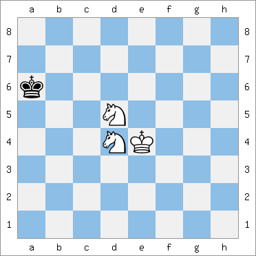
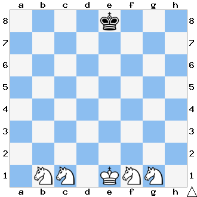
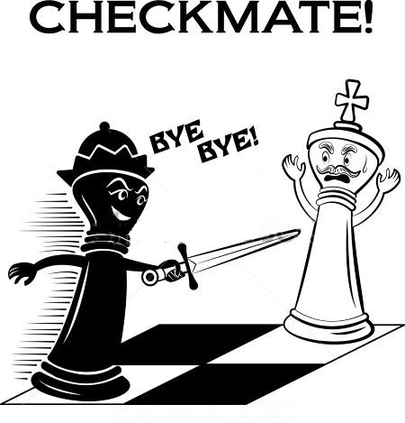

Este es un final de tablas, ya que dos caballos no pueden dar mate contra el rey solo porque antes lo ahogarían.
Las posiciones de mate, si bien existen, no se pueden forzar, es decir que no hay manera de llegar a producirlas según una secuencia obligada de movimientos, como sucedía en los finales analizados en los capítulos anteriores. Aquí el rey negro tiene siempre posibilidad de escapar, y no recibirá jaque mate a menos que entre voluntariamente en la red preparada.
|
 |
Las torres hacen la escalera, quitando al rey una fila cada vez. Cuando el rey se acerca amenazar una torre, ésta se aleja y continúa con la misma técnica
|
 |
¿Como se llega a estos finales?
Cuando en el transcurso de la partida uno de los jugadores ha obtenido ventaja material (piezas de más o mejores), los sucesivos cambios de piezas que se van produciendo pueden llevarnos a uno estos finales. Por tanto, con frecuencia se trata de un final buscado tras lograr ventaja de material decisiva.
En las partidas de alto nivel no se suelen rematar estos finales, porque la ventaja es tan grande que el jugador que va perdiendo abandona, pero, como principiante, hay que jugar hasta el final. El tiempo y la experiencia te dirán cuando es inútil continuar la partida. Analizamos a continuación estos finales con pocas piezas y contra rey solitario.
. |
 |
|